![]()
850 + 150 # dos tandas de encuestas, sumadas
#> [1] 1000Taller de introducción a R con la Encuesta ICSOH-UDP
Análisis de datos de clima social en ciencias sociales
22 julio, 2026
Objetivo del taller
- Darles las primeras herramientas para programar en R aplicado al análisis de datos en ciencias sociales. Vamos a trabajar con una versión de la Encuesta ICSOH-UDP, un instrumento de opinión pública que mide el clima social y político en Chile.
- Al terminar, ustedes van a poder cargar una base de datos, explorarla, recodificarla, y producir sus primeros análisis descriptivos, todo con código que puedan repetir y adaptar.
Vamos a trabajar en Posit Cloud, directo desde el navegador y sin instalar nada. Los detalles de acceso están en la Guía 1 que se envió antes del taller.
Lo que sí vamos a ver
- Qué es R y cómo se usa junto a RStudio
- Los elementos básicos del lenguaje: objetos, vectores, tipos de datos
- Herramientas para cargar, ordenar y procesar datos de encuestas
- Estadística descriptiva: frecuencias, promedios y gráficos simples
Lo que no vamos a ver
- Cómo instalar R y RStudio en tu computador: como trabajamos en Posit Cloud, hoy no hace falta instalar nada; si igual quieres instalarlo en tu computador, la guía está en la Guía 1
- Cómo escribir tus propias funciones o loops
- Modelos estadísticos complejos (p. ej. regresiones)
Todo esto lo pueden seguir aprendiendo después, una vez que tengan las bases 🙂
¿Qué se van a llevar?
- Van a perder el miedo a la pantalla en blanco de un script
- Van a poder cargar cualquier base de encuesta y darle una primera mirada
- Van a poder responder preguntas simples con datos: ¿cuántas personas piensan X?, ¿cómo varía Y según Z?
La Encuesta ICSOH-UDP
- Encuesta de opinión pública sobre clima social y político en Chile, levantada por ICSOH y el OBDE de la UDP
- Metodología: encuesta online autoaplicada, con diseño muestral por cuotas
- \(N\) = 1.500 casos con valores perdidos introducidos con fines pedagógicos
- Más información: icso.udp.cl/nosotros/encuesta
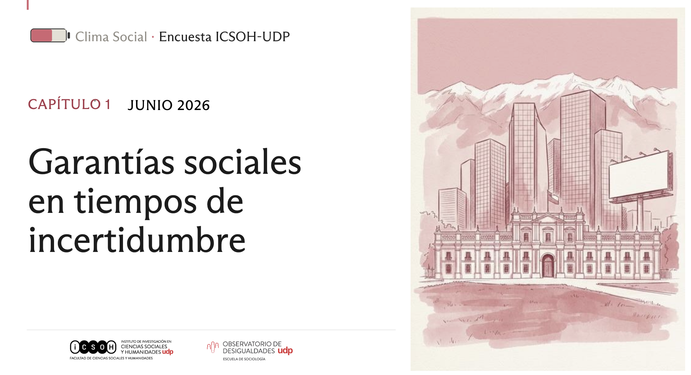
Flujo de trabajo
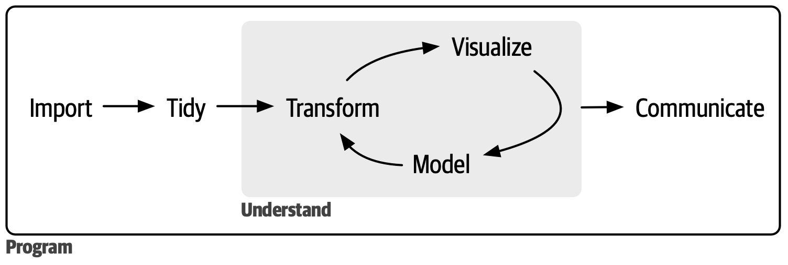
Input - Processing - Output
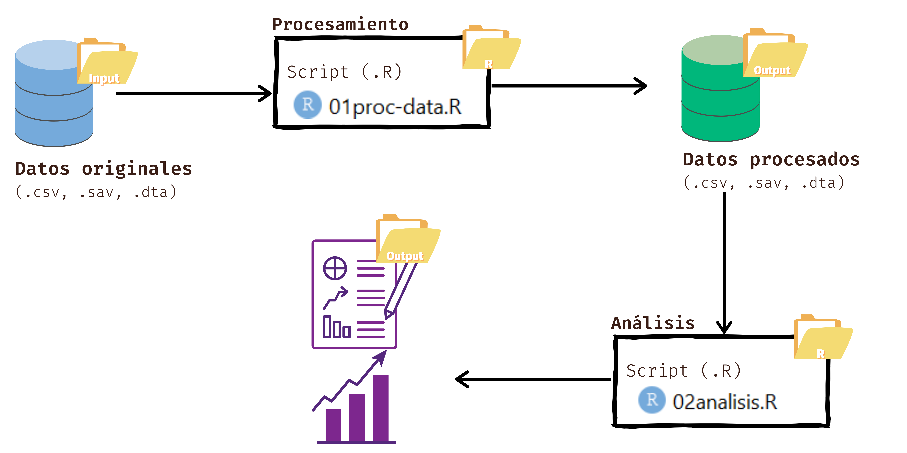
¿Qué es R?
R es un lenguaje y ambiente de programación pensado para trabajar con datos: analizarlos, transformarlos y visualizarlos.
¿Para qué lo vamos a usar?
- Para cargar, procesar y analizar datos
- Para construir tablas, gráficos o informes de forma reproducible
- Para dejar registrado cada paso de nuestro análisis
¿Por qué usar R?
¿Por qué usar R?
Gratuito
R es de código abierto, lo mantiene su propia comunidad de usuarias y usuarios, y no vas a tener que pagar licencias para usarlo.
Pensado para datos
A diferencia de otros lenguajes de programación de propósito general, R nació para el análisis estadístico, así que sus herramientas calzan naturalmente con lo que hacemos en ciencias sociales.
Reproducible
Un script de R deja registrado cada paso de tu análisis: si te equivocas, corriges una línea y vuelves a correr todo, sin tener que repetir manualmente nada.
¿Qué se puede hacer con R?
- Procesar distintos tipos de datos
- Realizar análisis estadísticos simples y complejos
- Generar reportes y presentaciones
- Reproducibilidad
- Hacer mapas, dashboards, reportes automáticos, y más:
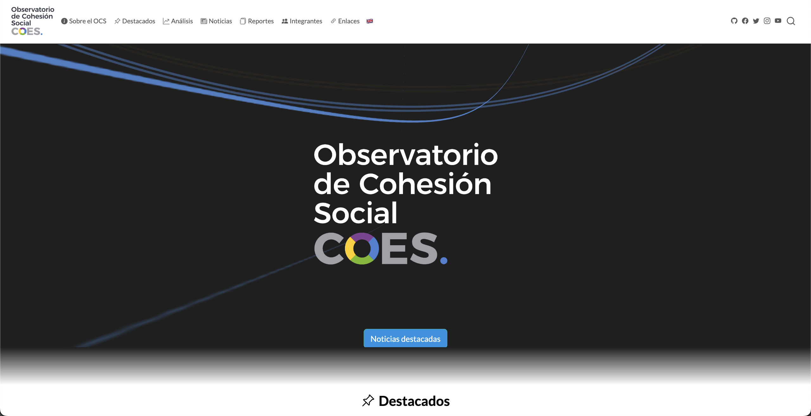
Sitios web
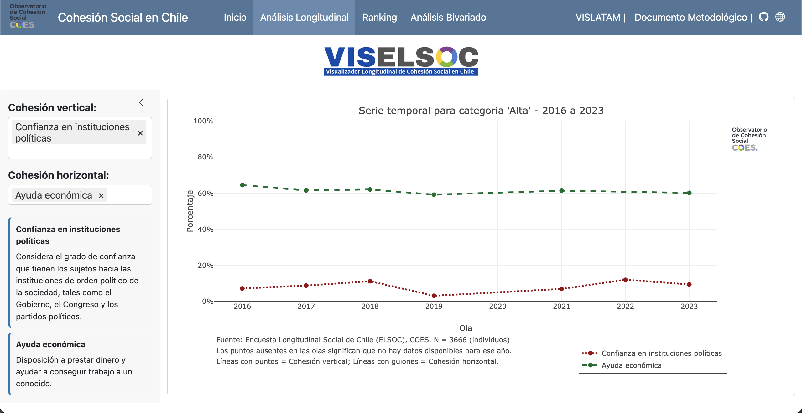
Aplicaciones Shiny
Encuestas
RStudio
RStudio es un entorno de desarrollo integrado (IDE) que nos permite escribir y ejecutar código en R de forma más cómoda y visual que la consola sola.
- Es la forma más popular de trabajar con R
- Existe como programa de escritorio, y también como Posit Cloud, que corre en el navegador
- También existe Positron, una alternativa más moderna
- Hoy vamos a trabajar en Posit Cloud: no necesitan instalar nada, solo entrar al proyecto que les compartimos
Conceptos clave
Script
Un archivo de texto .R (o .qmd) donde escribimos nuestro código en orden, paso a paso, para poder volver a ejecutarlo cuando queramos.
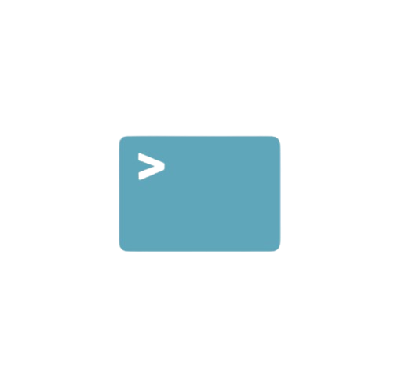
Consola
El lugar donde R ejecuta cada instrucción, una a la vez. Lo que se escribe directo en la consola no queda guardado.
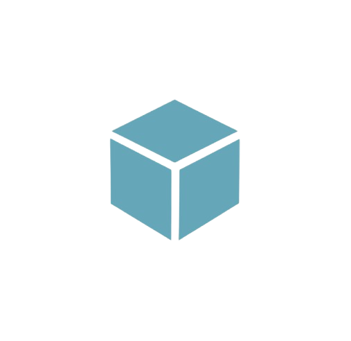
Proyecto
En Posit Cloud, cada espacio de trabajo ya es un proyecto: una carpeta que reúne datos, scripts y resultados en un mismo lugar. No hace falta crearlo a mano, así que solo entramos al proyecto que les compartimos.
Cuando trabajen en su computador, el equivalente es un archivo .Rproj, que define esa misma carpeta como su espacio de trabajo.
Paneles de RStudio
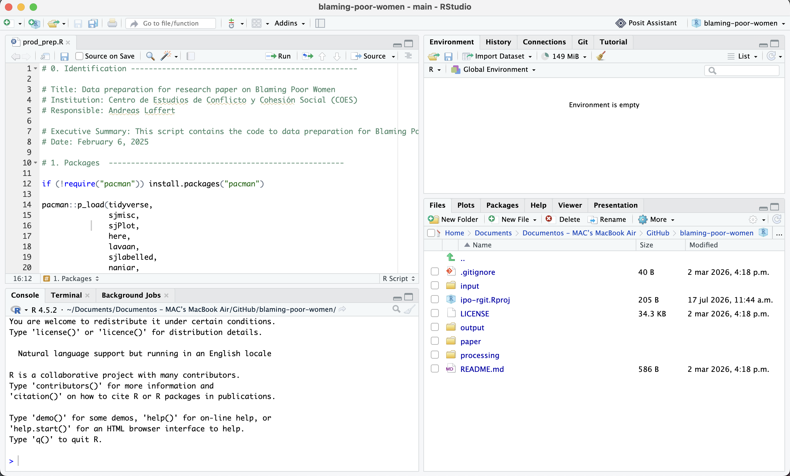
1 Scripts
2 Consola
3 Entorno
4 Archivos
Consola y scripts
La consola es como hablar en voz alta con R (responde al instante, pero no queda registro de lo que dijiste); el script es tu receta escrita (queda guardada, y la puedes volver a ejecutar cuantas veces quieras).
- Todo comando de R se ejecuta en la consola, que es donde vive R
- Lo que escribes directo en la consola se ejecuta, pero no se guarda
- Para guardar tu trabajo, escribes en un script
- Desde el script, envías cada línea a la consola con el botón Run o
control/cmd + enter
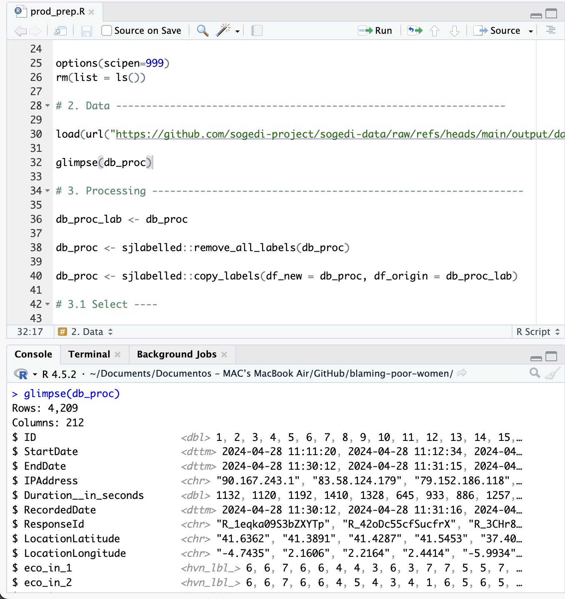
Botones útiles
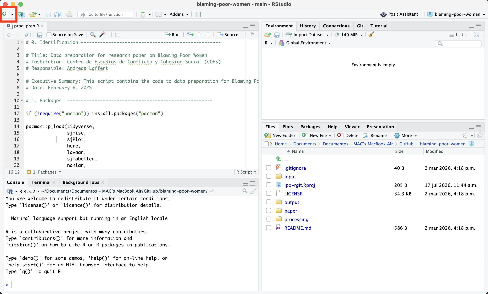
Crear un nuevo script de R
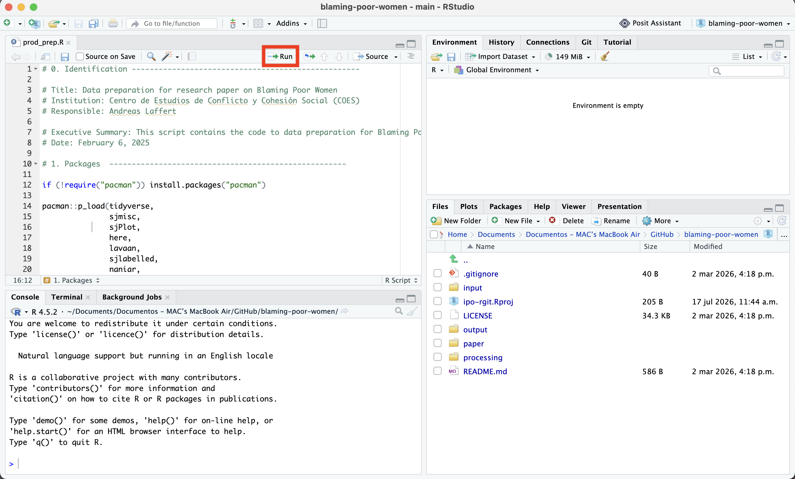
Botón para ejecutar código
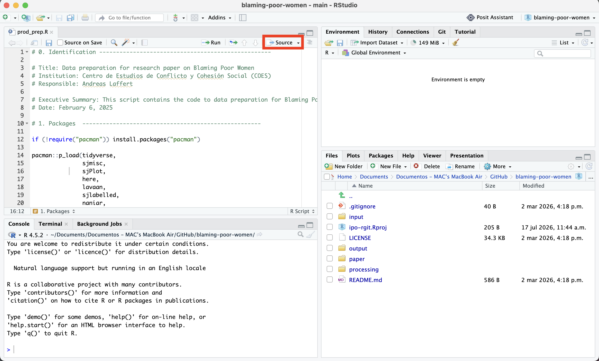
Botón para ejecutar todo el script
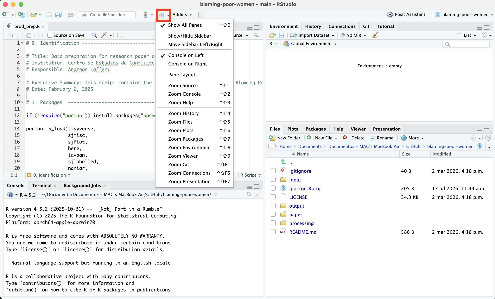
Configurar paneles de RStudio
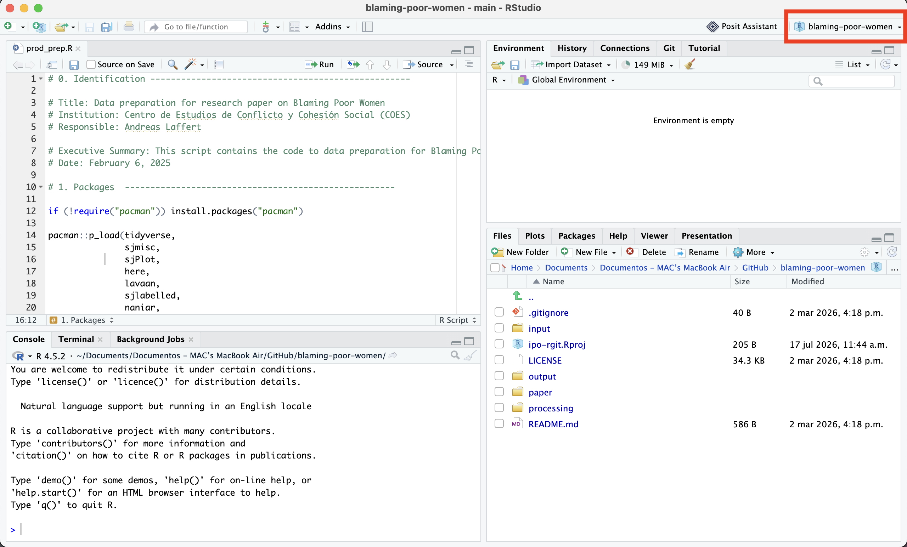
Cambiar de proyecto o crear uno nuevo
Introducción a R
Antes de trabajar con la encuesta, veamos los elementos más básicos del lenguaje.
R como calculadora
- Podemos escribir cualquier operación matemática directamente en R
- Para ejecutarla, pon el cursor en la línea y presiona
control/cmd + enter - El resultado aparece en la consola
Objetos
R es un lenguaje de programación orientado a objetos:
Crear elementos dentro del ambiente de R, a los cuales les asignaremos información que quedará almacenada
Todas las instrucciones en R en las que crees objetos, es decir, instrucciones de asignación, tendrán la misma estructura
nombre ← contenido
Al asignar, creamos o modificamos un objeto. Al ejecutarlo, obtenemos su contenido.
Reto de asignación
¿Qué creen que va a mostrar cada línea? Piénsenlo antes de revelar la respuesta.
¿Cuál es el valor de a?
¿Y de b?
¿a + 10?
Comentarios
- Un comentario empieza con
#: todo lo que sigue en esa línea no se ejecuta - Sirven para explicar qué hace tu código, o para desactivar una línea sin borrarla
- Son fundamentales para que tu script se entienda meses después, o para que otra persona lo entienda
Operadores
En R usamos distintos operadores según lo que queramos hacer: calcular, comparar, asignar, o combinar condiciones.
Operadores en acción
Un par de ejemplos, sin ser exhaustivos (para eso está la imagen anterior):
Tipos de datos
Lo que podemos hacer con un dato depende de su tipo.
Transformar tipos (coerción)
Existen funciones para convertir un dato de un tipo a otro:
Vectores
Un vector es una secuencia de elementos del mismo tipo: la forma más básica de guardar varios datos a la vez usando c()
Y ahora la buena noticia: cada columna de una base de datos ya es un vector.
Operaciones sobre vectores
Como es un vector numérico, podemos calcular funciones sobre él, como el promedio:
fichas_salud viene de una pregunta donde cada persona reparte 10 fichas de gasto público entre distintas áreas: aquí vemos cuántas, en promedio, se destinan a salud.
Funciones
- Las funciones son pequeñas herramientas que permiten realizar distintas operaciones.
función(argumento = 123)
Algunas funciones comunes:
Bases de datos (data frames)
Un data frame es una tabla: cada fila es un caso (una persona encuestada) y cada columna es una variable.
Un data frame es “pegar” varios vectores del mismo largo como columnas:
edad <- c(18, 22, 36, 19, 35)
sexo <- c("Mujer", "Hombre", "Hombre", "Mujer", "Mujer")
region <- c("Metropolitana", "Valparaíso", "Biobío", "Metropolitana", "Maule")
mini_base <- data.frame(edad, sexo, region)
mini_base
#> edad sexo region
#> 1 18 Mujer Metropolitana
#> 2 22 Hombre Valparaíso
#> 3 36 Hombre Biobío
#> 4 19 Mujer Metropolitana
#> 5 35 Mujer MauleLa base que vamos a usar durante todo el taller ya es un data frame, solo que mucho más grande:
datos
#> # A tibble: 1,000 × 101
#> id sexo tramo_edad quintil_ingreso educ ideologia trade_crecimiento_de…¹
#> <int> <fct> <ord> <ord> <ord> <fct> <fct>
#> 1 1 Mujer 18-29 Q4 Técn… Izquierda Ni de acuerdo ni en d…
#> 2 2 Homb… 30-49 Q2 Técn… Centro En desacuerdo
#> 3 3 Homb… 18-29 Q4 Univ… Derecha De acuerdo
#> 4 4 Mujer 18-29 Q3 Univ… Derecha En desacuerdo
#> 5 5 Homb… 30-49 Q4 Univ… Ninguno Muy en desacuerdo
#> 6 6 Mujer 50-99 Q3 Bási… Derecha De acuerdo
#> 7 7 Homb… 50-99 Q2 Técn… Centro Muy en desacuerdo
#> 8 8 Homb… 30-49 Q3 Univ… Ninguno En desacuerdo
#> 9 9 Mujer 50-99 Q2 Técn… Derecha De acuerdo
#> 10 10 Homb… 18-29 Q5 Univ… Derecha En desacuerdo
#> # ℹ 990 more rows
#> # ℹ abbreviated name: ¹trade_crecimiento_desigualdad
#> # ℹ 94 more variables: trade_ambiente_empleo <fct>,
#> # trade_derechos_laborales <fct>, provision_pensiones <dbl>,
#> # provision_salud <dbl>, provision_educ_escolar <dbl>,
#> # provision_educ_universitaria <dbl>, provision_cuidado_ninos <dbl>,
#> # provision_cuidado_mayores <dbl>, zona <fct>, region <fct>, …Herramientas básicas de procesamiento de datos
- Librerías
- Cargar datos
- Observar datos
- Manipular datos
- Guardar y exportar
Librerías

- Extensiones que agregan funciones nuevas a R
- Se instalan una vez desde internet, y se cargan cada sesión
- Los mantiene la comunidad de R
- Piénsalos como cajones de cocina: cada paquete guarda herramientas específicas, y uno va abriendo el cajón que necesita para la tarea que tiene entre manos
Librerías
El flujo tradicional para usar un paquete es en dos pasos:
Instalar es comprar la herramienta y guardarla en el cajón; cargarla con library() es sacarla del cajón cada vez que te pones a cocinar.
Datos
Para cargar datos necesitamos:
- Un archivo, y conocer su formato (RData, Excel, Stata, CSV, etc.)
- Que el archivo esté guardado dentro del proyecto
- Una función, y a veces un paquete, que sepa leer ese formato
Cargar datos
Nuestra base viene en formato .RData, el formato nativo de R. Se carga con load(), y el objeto aparece con el nombre que traía guardado:
head(bbdd_clima_sample)
#> # A tibble: 6 × 101
#> id sexo tramo_edad quintil_ingreso educ ideologia trade_crecimiento_de…¹
#> <int> <fct> <ord> <ord> <ord> <fct> <dbl+lbl>
#> 1 1 Mujer 18-29 Q4 Técn… Izquierda 3 [Ni de acuerdo ni e…
#> 2 2 Hombre 30-49 Q2 Técn… Centro 2 [En desacuerdo]
#> 3 3 Hombre 18-29 Q4 Univ… Derecha 4 [De acuerdo]
#> 4 4 Mujer 18-29 Q3 Univ… Derecha 2 [En desacuerdo]
#> 5 5 Hombre 30-49 Q4 Univ… Ninguno 1 [Muy en desacuerdo]
#> 6 6 Mujer 50-99 Q3 Bási… Derecha 4 [De acuerdo]
#> # ℹ abbreviated name: ¹trade_crecimiento_desigualdad
#> # ℹ 94 more variables: trade_ambiente_empleo <dbl+lbl>,
#> # trade_derechos_laborales <dbl+lbl>, provision_pensiones <dbl>,
#> # provision_salud <dbl>, provision_educ_escolar <dbl>,
#> # provision_educ_universitaria <dbl>, provision_cuidado_ninos <dbl>,
#> # provision_cuidado_mayores <dbl>, zona <dbl+lbl>, region <dbl+lbl>,
#> # condicion_exp <dbl+lbl>, emocion_pais <dbl+lbl>, …La estructura general para importar datos es la siguiente:
read_*("ruta_hacia_archivo/nombre_archivo.*")
Otros formatos comunes
{readxl}para leer planillas Excel (read_excel()){readr}para csv, rds y otros formatos de texto{haven}para archivos SPSS, Stata y SAS, muy comunes en encuestas
Observar datos
head(): primeras filasnames(): nombres de las columnasdim(): número de filas y columnasView(): abre la tabla completa en una pestaña
dim(datos)
#> [1] 1000 101
names(datos)
#> [1] "id" "sexo"
#> [3] "tramo_edad" "quintil_ingreso"
#> [5] "educ" "ideologia"
#> [7] "trade_crecimiento_desigualdad" "trade_ambiente_empleo"
#> [9] "trade_derechos_laborales" "provision_pensiones"
#> [11] "provision_salud" "provision_educ_escolar"
#> [13] "provision_educ_universitaria" "provision_cuidado_ninos"
#> [15] "provision_cuidado_mayores" "zona"
#> [17] "region" "condicion_exp"
#> [19] "emocion_pais" "eval_pais_retro"
#> [21] "eval_pais_prospectivo" "problema_delincuencia"
#> [23] "problema_migracion" "problema_crecimiento"
#> [25] "problema_desempleo" "problema_salud"
#> [27] "problema_corrupcion" "problema_pobreza"
#> [29] "problema_sueldos" "problema_precios"
#> [31] "problema_educacion" "problema_pensiones"
#> [33] "problema_vivienda" "problema_genero"
#> [35] "problema_ambiente" "problema_transporte"
#> [37] "problema_desigualdad" "emergencia_economica"
#> [39] "medida_imp_empresas" "medida_tramites_amb"
#> [41] "medida_gratuidad" "medida_contrib_adulto"
#> [43] "medida_imp_inversionistas" "percep_benef_empresas"
#> [45] "percep_necesarias" "percep_prioriza_ricos"
#> [47] "percep_bases_solidas" "percep_confianza_plan"
#> [49] "gob_distinto_campana" "gob_favorece_ricos"
#> [51] "gob_buen_camino" "gob_capacidad"
#> [53] "tiempo_confianza_gob" "meta_prioritaria_kast"
#> [55] "voto_2da_vuelta" "eval_gobierno_kast"
#> [57] "gob_vs_expectativa" "intervencion_estado"
#> [59] "trade_estado_grande" "resp_estado_pensiones"
#> [61] "resp_estado_empleo" "resp_estado_educ_uni"
#> [63] "resp_estado_salud" "resp_estado_vivienda"
#> [65] "resp_estado_transporte" "resp_estado_internet"
#> [67] "fichas_salud" "fichas_educ"
#> [69] "fichas_pensiones" "fichas_seguridad"
#> [71] "fichas_vivienda" "fichas_fomento"
#> [73] "fichas_redes" "justo_pension_aporte"
#> [75] "justo_educ_pago" "justo_salud_pago"
#> [77] "imp_prefiero_menos" "imp_justo_ricos_mas"
#> [79] "imp_mal_gasto_estado" "imp_bajar_genera_empleo"
#> [81] "chequeo_atencion" "redistrib_reducir_diferencias"
#> [83] "redistrib_ayuda_pobres" "redistrib_nivel_vida_desemp"
#> [85] "imp_aumentar_altos_ingresos" "imp_herencia_ricos"
#> [87] "educacion_nivel" "actividad_principal"
#> [89] "ingreso_hogar" "llega_fin_mes"
#> [91] "impacto_alza_precios" "economia_hogar_retro"
#> [93] "economia_hogar_prospectiva" "autoubicacion_izq_der"
#> [95] "edad_grupo_banda" "educacion_nivel_r"
#> [97] "ingreso_hogar_r" "zona_r"
#> [99] "autoubicacion_izq_der_r" "ponderador"
#> [101] "gse"Estructura de la bbdd
Con glimpse() vemos el tipo de cada columna y sus primeros valores:
glimpse(datos)
#> Rows: 1,000
#> Columns: 101
#> $ id <int> 1, 2, 3, 4, 5, 6, 7, 8, 9, 10, 11, 12, 1…
#> $ sexo <fct> Mujer, Hombre, Hombre, Mujer, Hombre, Mu…
#> $ tramo_edad <ord> 18-29, 30-49, 18-29, 18-29, 30-49, 50-99…
#> $ quintil_ingreso <ord> Q4, Q2, Q4, Q3, Q4, Q3, Q2, Q3, Q2, Q5, …
#> $ educ <ord> Técnica superior, Técnica superior, Univ…
#> $ ideologia <fct> Izquierda, Centro, Derecha, Derecha, Nin…
#> $ trade_crecimiento_desigualdad <fct> Ni de acuerdo ni en desacuerdo, En desac…
#> $ trade_ambiente_empleo <fct> En desacuerdo, En desacuerdo, En desacue…
#> $ trade_derechos_laborales <fct> En desacuerdo, En desacuerdo, Muy en des…
#> $ provision_pensiones <dbl> 1, 1, 2, 1, 1, 1, 1, 1, 1, 3, 1, 1, 2, 1…
#> $ provision_salud <dbl> 1, 1, 1, 1, 1, 1, 1, 1, 1, 1, 1, 1, 2, 1…
#> $ provision_educ_escolar <dbl> 1, 1, 2, 2, 1, 1, 1, 3, 1, 1, 1, 1, 2, 1…
#> $ provision_educ_universitaria <dbl> 1, 1, 2, 2, 1, 1, 1, 3, 1, 2, 2, 1, 2, 1…
#> $ provision_cuidado_ninos <dbl> 1, 3, 2, 2, 1, 1, 1, 1, 1, 3, 2, 1, 2, 1…
#> $ provision_cuidado_mayores <dbl> 1, 1, 2, 2, 1, 1, 1, 1, 1, 2, 2, 1, 2, 1…
#> $ zona <fct> Centro, Centro, Norte Grande, Zona Sur, …
#> $ region <fct> Maule, Maule, Antofagasta, Biobío, Metro…
#> $ condicion_exp <fct> T1- Desigualdad de clase, Control, T1- D…
#> $ emocion_pais <fct> Frustración, Preocupación, Esperanza, An…
#> $ eval_pais_retro <fct> Más o menos igual, Algo peor, Algo mejor…
#> $ eval_pais_prospectivo <fct> Más o menos igual, Algo peor, Mucho mejo…
#> $ problema_delincuencia <fct> No, Yes, Yes, No, No, Yes, Yes, No, Yes,…
#> $ problema_migracion <fct> No, Yes, Yes, Yes, No, No, No, Yes, No, …
#> $ problema_crecimiento <fct> Yes, No, No, Yes, No, No, No, No, No, Ye…
#> $ problema_desempleo <fct> No, No, No, No, No, Yes, No, No, Yes, No…
#> $ problema_salud <fct> Yes, No, No, Yes, No, No, No, Yes, No, N…
#> $ problema_corrupcion <fct> No, Yes, Yes, No, No, No, Yes, Yes, No, …
#> $ problema_pobreza <fct> No, No, No, No, No, No, No, No, No, No, …
#> $ problema_sueldos <fct> No, No, No, No, Yes, No, No, No, Yes, No…
#> $ problema_precios <fct> Yes, No, No, No, Yes, Yes, Yes, No, No, …
#> $ problema_educacion <fct> No, No, No, No, No, No, No, No, No, No, …
#> $ problema_pensiones <fct> No, No, No, No, No, No, No, No, No, No, …
#> $ problema_vivienda <fct> No, No, No, No, No, No, No, No, No, No, …
#> $ problema_genero <fct> No, No, No, No, No, No, No, No, No, No, …
#> $ problema_ambiente <fct> No, No, No, No, No, No, No, No, No, No, …
#> $ problema_transporte <fct> No, No, No, No, No, No, No, No, No, No, …
#> $ problema_desigualdad <fct> No, No, No, No, Yes, No, No, No, No, No,…
#> $ emergencia_economica <fct> El país está en emergencia económica por…
#> $ medida_imp_empresas <fct> Ni de acuerdo ni en desacuerdo, En desac…
#> $ medida_tramites_amb <fct> En desacuerdo, En desacuerdo, Ni de acue…
#> $ medida_gratuidad <fct> Ni de acuerdo ni en desacuerdo, En desac…
#> $ medida_contrib_adulto <fct> De acuerdo, De acuerdo, Muy de acuerdo, …
#> $ medida_imp_inversionistas <fct> En desacuerdo, Muy de acuerdo, Muy de ac…
#> $ percep_benef_empresas <fct> Ni de acuerdo ni en desacuerdo, De acuer…
#> $ percep_necesarias <fct> Ni de acuerdo ni en desacuerdo, De acuer…
#> $ percep_prioriza_ricos <fct> De acuerdo, De acuerdo, En desacuerdo, N…
#> $ percep_bases_solidas <fct> Ni de acuerdo ni en desacuerdo, Ni de ac…
#> $ percep_confianza_plan <fct> Ni de acuerdo ni en desacuerdo, Ni de ac…
#> $ gob_distinto_campana <fct> Ni de acuerdo ni en desacuerdo, Ni de ac…
#> $ gob_favorece_ricos <fct> Ni de acuerdo ni en desacuerdo, De acuer…
#> $ gob_buen_camino <fct> De acuerdo, Ni de acuerdo ni en desacuer…
#> $ gob_capacidad <fct> Ni de acuerdo ni en desacuerdo, Ni de ac…
#> $ tiempo_confianza_gob <fct> Entre 6 meses y 1 año, Entre 6 meses y 1…
#> $ meta_prioritaria_kast <fct> Alcanzar un crecimiento económico del 4%…
#> $ voto_2da_vuelta <fct> Jeannette Jara, José Antonio Kast, José …
#> $ eval_gobierno_kast <fct> Ni positiva ni negativa, De manera más b…
#> $ gob_vs_expectativa <fct> Mejor de lo que pensaba, Peor de lo que …
#> $ intervencion_estado <fct> Bastante, Bastante, Algo, Algo, Mucho: e…
#> $ trade_estado_grande <fct> En desacuerdo, En desacuerdo, En desacue…
#> $ resp_estado_pensiones <fct> Sí, Sí, Sí, Sí, Sí, Sí, Sí, Sí, Sí, Sí, …
#> $ resp_estado_empleo <fct> Sí, Sí, No, No, Sí, Sí, Sí, Sí, Sí, Sí, …
#> $ resp_estado_educ_uni <fct> Sí, Sí, No, Sí, Sí, Sí, Sí, Sí, Sí, Sí, …
#> $ resp_estado_salud <fct> Sí, Sí, Sí, Sí, Sí, Sí, Sí, Sí, Sí, Sí, …
#> $ resp_estado_vivienda <fct> Sí, Sí, Sí, Sí, Sí, Sí, Sí, Sí, Sí, No, …
#> $ resp_estado_transporte <fct> Sí, Sí, Sí, No, Sí, Sí, Sí, Sí, Sí, Sí, …
#> $ resp_estado_internet <fct> Sí, Sí, Sí, No, Sí, Sí, Sí, No, Sí, No, …
#> $ fichas_salud <dbl> 2, 1, 3, 4, 3, 2, 2, 2, 2, 1, 1, 2, 2, 2…
#> $ fichas_educ <dbl> 2, 2, 1, 2, 3, 1, 1, 1, 1, 2, 2, 2, 2, 2…
#> $ fichas_pensiones <dbl> 2, 1, 1, 0, 1, 1, 2, 2, 1, 1, 1, 2, 2, 2…
#> $ fichas_seguridad <dbl> 1, 2, 2, 2, 0, 1, 2, 1, 3, 3, 1, 1, 1, N…
#> $ fichas_vivienda <dbl> 1, 1, 1, 0, 3, 1, 1, 1, 1, 1, 1, 1, 1, 1…
#> $ fichas_fomento <dbl> 1, 1, 1, 0, 0, 3, 2, 2, 1, 2, 3, 1, 1, 1…
#> $ fichas_redes <dbl> 1, 2, 1, 2, 0, 1, 0, 1, 1, 0, 1, 1, 1, 1…
#> $ justo_pension_aporte <fct> Justo, Muy injusto, Muy justo, Justo, Mu…
#> $ justo_educ_pago <fct> Injusto, Ni justo ni injusto, Muy justo,…
#> $ justo_salud_pago <fct> Muy injusto, Injusto, Ni justo ni injust…
#> $ imp_prefiero_menos <fct> En desacuerdo, Ni de acuerdo ni en desac…
#> $ imp_justo_ricos_mas <fct> Ni de acuerdo ni en desacuerdo, De acuer…
#> $ imp_mal_gasto_estado <fct> Muy de acuerdo, De acuerdo, Muy de acuer…
#> $ imp_bajar_genera_empleo <fct> Ni de acuerdo ni en desacuerdo, Ni de ac…
#> $ chequeo_atencion <fct> Naranjo, Naranjo, Naranjo, Naranjo, Nara…
#> $ redistrib_reducir_diferencias <fct> 4 Ni de acuerdo ni en desacuerdo, 7 Tota…
#> $ redistrib_ayuda_pobres <fct> 5, 1 Totalmente en desacuerdo, 3, 4 Ni d…
#> $ redistrib_nivel_vida_desemp <fct> 4 Ni de acuerdo ni en desacuerdo, 1 Tota…
#> $ imp_aumentar_altos_ingresos <fct> 4 Ni de acuerdo ni en desacuerdo, 3, 5, …
#> $ imp_herencia_ricos <fct> 5, 1 Totalmente en desacuerdo, 3, 4 Ni d…
#> $ educacion_nivel <fct> Técnica superior completa (instituto o C…
#> $ actividad_principal <fct> "Trabajó de manera remunerada", "Trabajó…
#> $ ingreso_hogar <fct> De $1.300.000 a $1.599.999 mensuales, De…
#> $ llega_fin_mes <fct> "Nos alcanza justo y podemos darnos algu…
#> $ impacto_alza_precios <fct> Nos ha afectado bastante, Nos ha afectad…
#> $ economia_hogar_retro <fct> Algo peor, Algo peor, Igual, Algo mejor,…
#> $ economia_hogar_prospectiva <fct> Igual, Mucho peor, Igual, Algo mejor, Al…
#> $ autoubicacion_izq_der <fct> 4, 5, 6, 7, Sin identificación política,…
#> $ edad_grupo_banda <fct> 18-29, 30-49, 18-29, 18-29, 30-49, 50-99…
#> $ educacion_nivel_r <fct> Técnica superior, Técnica superior, Univ…
#> $ ingreso_hogar_r <fct> Quintil 4 (Q4), Quintil 2 (Q2), Quintil …
#> $ zona_r <fct> Centro, Centro, Norte, Sur, Metropolitan…
#> $ autoubicacion_izq_der_r <fct> Izq, Centro, Der, Der, Ninguno, Der, Cen…
#> $ ponderador <dbl> 0.96179555, 0.08472251, 0.39604249, 0.22…
#> $ gse <chr> "C2", "D", "ABC1", "C2", "C2", "D", "C3"…{dplyr}
- Paquete para explorar, filtrar y transformar datos
- Sus funciones se escriben como verbos, cada uno con un propósito claro
- Se encadenan con el conector
|>(también existe%>%)

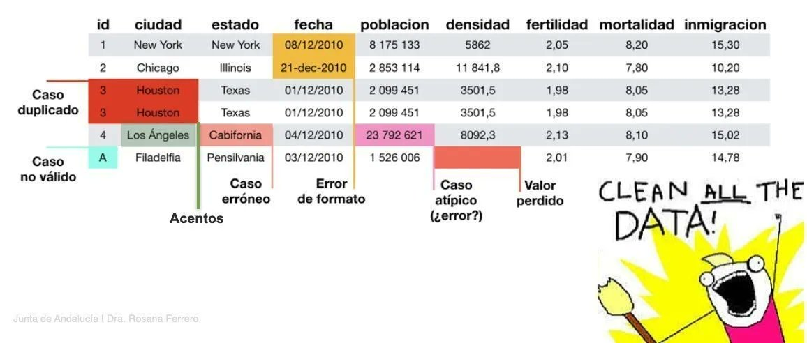
Conector
El pipe |> (o %>%) es otro operador, el conector, que usaremos para encadenar operaciones cuando lleguemos a {dplyr}.
|> o %>%
Significa: “toma lo que está a la izquierda y pásalo como primer argumento a la función de la derecha”.
Los verbos principales
Seleccionar columnas:
#> # A tibble: 4 × 2
#> sexo region
#> <fct> <fct>
#> 1 Mujer Maule
#> 2 Hombre Maule
#> 3 Hombre Antofagasta
#> 4 Mujer BiobíoOrdenar observaciones:
#> # A tibble: 4 × 3
#> sexo region fichas_pensiones
#> <fct> <fct> <dbl>
#> 1 Mujer Biobío 0
#> 2 Hombre Los Lagos 0
#> 3 Mujer Metropolitana 0
#> 4 Mujer Valparaíso 0Filtrar datos:
#> # A tibble: 4 × 3
#> sexo region tramo_edad
#> <fct> <fct> <ord>
#> 1 Mujer Maule 18-29
#> 2 Hombre Antofagasta 18-29
#> 3 Mujer Biobío 18-29
#> 4 Hombre Metropolitana 18-29Crear variables:
#> # A tibble: 4 × 3
#> sexo region fichas_x
#> <fct> <fct> <dbl>
#> 1 Mujer Maule 2
#> 2 Hombre Maule 2
#> 3 Hombre Antofagasta 2
#> 4 Mujer Biobío 0Y más!
Recodificar y transformar
mutate() crea o modifica columnas. Empecemos con if_else(), primero codificando como 1 / 0:
La misma condición, ahora con etiquetas legibles en vez de números:
case_when() para varias categorías
Cuando hay más de dos opciones, case_when() evalúa condiciones en orden
Valores perdidos
- En una encuesta, no todas las personas responden todo: eso genera valores perdidos (
NA) is.na()nos dice si un valor es perdido;sum()los cuenta
sum(is.na(datos$sexo)) # NA en una sola variable
#> [1] 11
sum(is.na(datos)) # NA en toda la base
#> [1] 117
colSums(is.na(datos)) # NA por columna
#> id sexo
#> 0 11
#> tramo_edad quintil_ingreso
#> 0 0
#> educ ideologia
#> 0 1
#> trade_crecimiento_desigualdad trade_ambiente_empleo
#> 1 3
#> trade_derechos_laborales provision_pensiones
#> 0 2
#> provision_salud provision_educ_escolar
#> 0 1
#> provision_educ_universitaria provision_cuidado_ninos
#> 1 1
#> provision_cuidado_mayores zona
#> 2 0
#> region condicion_exp
#> 1 1
#> emocion_pais eval_pais_retro
#> 0 0
#> eval_pais_prospectivo problema_delincuencia
#> 0 0
#> problema_migracion problema_crecimiento
#> 0 1
#> problema_desempleo problema_salud
#> 0 2
#> problema_corrupcion problema_pobreza
#> 1 0
#> problema_sueldos problema_precios
#> 0 0
#> problema_educacion problema_pensiones
#> 2 0
#> problema_vivienda problema_genero
#> 2 1
#> problema_ambiente problema_transporte
#> 1 1
#> problema_desigualdad emergencia_economica
#> 3 1
#> medida_imp_empresas medida_tramites_amb
#> 2 2
#> medida_gratuidad medida_contrib_adulto
#> 3 0
#> medida_imp_inversionistas percep_benef_empresas
#> 2 0
#> percep_necesarias percep_prioriza_ricos
#> 0 1
#> percep_bases_solidas percep_confianza_plan
#> 1 1
#> gob_distinto_campana gob_favorece_ricos
#> 2 1
#> gob_buen_camino gob_capacidad
#> 2 0
#> tiempo_confianza_gob meta_prioritaria_kast
#> 2 0
#> voto_2da_vuelta eval_gobierno_kast
#> 2 2
#> gob_vs_expectativa intervencion_estado
#> 1 0
#> trade_estado_grande resp_estado_pensiones
#> 1 0
#> resp_estado_empleo resp_estado_educ_uni
#> 1 1
#> resp_estado_salud resp_estado_vivienda
#> 1 0
#> resp_estado_transporte resp_estado_internet
#> 1 0
#> fichas_salud fichas_educ
#> 1 1
#> fichas_pensiones fichas_seguridad
#> 1 2
#> fichas_vivienda fichas_fomento
#> 2 0
#> fichas_redes justo_pension_aporte
#> 3 0
#> justo_educ_pago justo_salud_pago
#> 2 1
#> imp_prefiero_menos imp_justo_ricos_mas
#> 1 2
#> imp_mal_gasto_estado imp_bajar_genera_empleo
#> 0 4
#> chequeo_atencion redistrib_reducir_diferencias
#> 0 1
#> redistrib_ayuda_pobres redistrib_nivel_vida_desemp
#> 1 1
#> imp_aumentar_altos_ingresos imp_herencia_ricos
#> 1 1
#> educacion_nivel actividad_principal
#> 2 2
#> ingreso_hogar llega_fin_mes
#> 0 5
#> impacto_alza_precios economia_hogar_retro
#> 1 1
#> economia_hogar_prospectiva autoubicacion_izq_der
#> 0 3
#> edad_grupo_banda educacion_nivel_r
#> 2 1
#> ingreso_hogar_r zona_r
#> 2 1
#> autoubicacion_izq_der_r ponderador
#> 2 1
#> gse
#> 0No siempre hay que eliminar los NA: depende del análisis. En este taller usaremos listwise deletion: eliminar solo los casos que tengan NA en las variables que vamos a analizar, no en toda la base.
¿Por qué no aplicar na.omit() directo sobre datos completo? Porque es una base muy ancha (más de 100 columnas), y bastaría con que una sola tuviera un NA en cada fila para que casi todos los casos se eliminaran.
Funciones comunes
Algunas de las funciones más comunes de usar en {dplyr}:
head(),tail(),glimpse(): mirar los datosselect(): seleccionar variablesslice(): extraer filas por su posición o distintos criteriospull(): extraer una columna como vectorfilter(): filtrar observaciones según condicionesdistinct(): filtrar observaciones repetidascount(): conteo de casos únicos en una o más columnas
Guardar y exportar
Guardamos siempre en un objeto nuevo, para no perder ni sobreescribir los datos originales.
Herramientas para analizar datos
- Resumiendo datos
- Variables categóricas
- Variables numéricas
- Bivariados
- Algunos gráficos
Resumiendo datos
summarize() reduce toda la tabla a un solo resultado. Vamos de lo simple a lo más completo:
Un resumen simple, de una sola variable:
El mismo resumen, ahora por grupos, con group_by():
Y agregando una condición previa con filter(), más el conteo de casos por grupo con n():
datos_proc |>
filter(region == "Metropolitana") |>
group_by(ideologia) |>
summarize(fichas_seguridad_prom = mean(fichas_seguridad, na.rm = TRUE),
n = n())
#> # A tibble: 4 × 3
#> ideologia fichas_seguridad_prom n
#> <fct> <dbl> <int>
#> 1 Izquierda 1.53 127
#> 2 Centro 1.78 63
#> 3 Derecha 2.31 150
#> 4 Ninguno 1.60 104fichas_seguridad son las fichas de gasto público que cada persona asignó a seguridad; vemos que quienes se identifican de derecha le asignan, en promedio, bastantes más que quienes se identifican de izquierda.
Variables categóricas
Para ver la distribución de una variable categórica, usamos sjmisc::frq():
sjmisc::frq(datos_proc$gse)
#> x <character>
#> # total N=939 valid N=939 mean=2.66 sd=1.15
#>
#> Value | N | Raw % | Valid % | Cum. %
#> --------------------------------------
#> ABC1 | 193 | 20.55 | 20.55 | 20.55
#> C2 | 211 | 22.47 | 22.47 | 43.02
#> C3 | 306 | 32.59 | 32.59 | 75.61
#> D | 181 | 19.28 | 19.28 | 94.89
#> E | 48 | 5.11 | 5.11 | 100.00
#> <NA> | 0 | 0.00 | <NA> | <NA>Variables numéricas
Para variables numéricas usamos funciones de resumen o sjmisc::descr():
fichas_salud viene de una pregunta donde cada persona reparte 10 fichas de gasto público entre distintas áreas; aquí vemos cuántas fichas, en promedio, se destinan a salud.
Bivariados: categórica × categórica
Con sjPlot::tab_xtab() obtenemos una tabla de contingencia con porcentajes de fila:
| gse | ideologia | Total | |||
|---|---|---|---|---|---|
| Izquierda | Centro | Derecha | Ninguno | ||
| ABC1 | 54 28 % |
30 15.5 % |
75 38.9 % |
34 17.6 % |
193 100 % |
| C2 | 61 28.9 % |
21 10 % |
78 37 % |
51 24.2 % |
211 100 % |
| C3 | 75 24.5 % |
46 15 % |
94 30.7 % |
91 29.7 % |
306 100 % |
| D | 35 19.3 % |
32 17.7 % |
38 21 % |
76 42 % |
181 100 % |
| E | 2 4.2 % |
18 37.5 % |
15 31.2 % |
13 27.1 % |
48 100 % |
| Total | 227 24.2 % |
147 15.7 % |
300 31.9 % |
265 28.2 % |
939 100 % |
| χ2=65.238 · df=12 · Cramer's V=0.152 · p=0.000 | |||||
Bivariados: numérica × categórica
Comparamos las fichas de seguridad asignadas por hombres y por mujeres, y confirmamos la diferencia con una prueba t:
datos_proc |>
group_by(sexo) |>
summarize(fichas_seguridad_prom = mean(fichas_seguridad, na.rm = TRUE), n = n())
#> # A tibble: 2 × 3
#> sexo fichas_seguridad_prom n
#> <fct> <dbl> <int>
#> 1 Hombre 1.71 445
#> 2 Mujer 1.85 494
t.test(fichas_seguridad ~ sexo, data = datos_proc)
#>
#> Welch Two Sample t-test
#>
#> data: fichas_seguridad by sexo
#> t = -2.1865, df = 932.49, p-value = 0.02903
#> alternative hypothesis: true difference in means between group Hombre and group Mujer is not equal to 0
#> 95 percent confidence interval:
#> -0.26667538 -0.01439636
#> sample estimates:
#> mean in group Hombre mean in group Mujer
#> 1.705618 1.846154Bivariados: numérica × numérica
datos_proc <- datos_proc |>
mutate(ingreso_decil = ntile(as.integer(ingreso_hogar), 10)) # deciles de ingreso del hogar
ggplot(datos_proc, aes(x = ingreso_decil, y = fichas_pensiones)) +
geom_point(alpha = 0.3) +
geom_smooth(method = "lm", se = FALSE) +
labs(title = "Ingreso del hogar y fichas asignadas a pensiones",
x = "Ingreso del hogar (0 = sin ingresos, 10 = tramo más alto)",
y = "Fichas asignadas a pensiones")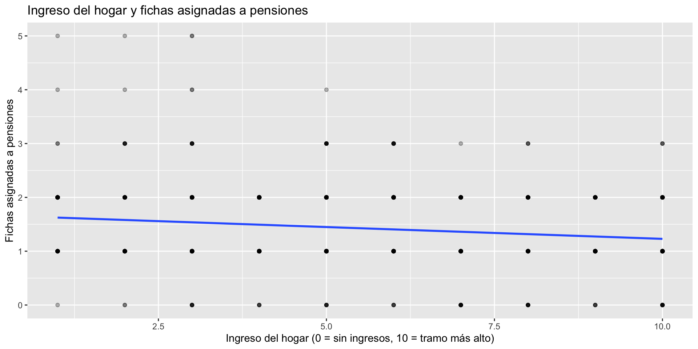
cor.test(datos_proc$ingreso_decil, datos_proc$fichas_pensiones)
#>
#> Pearson's product-moment correlation
#>
#> data: datos_proc$ingreso_decil and datos_proc$fichas_pensiones
#> t = -5.39, df = 937, p-value = 8.921e-08
#> alternative hypothesis: true correlation is not equal to 0
#> 95 percent confidence interval:
#> -0.2347854 -0.1106661
#> sample estimates:
#> cor
#> -0.1734142La correlación es negativa y significativa: a mayor ingreso del hogar, se tiende a asignar menos fichas a pensiones.
Recursos para seguir aprendiendo
Este taller se inspira en los materiales abiertos de Bastián Olea (proyecto Aprende R), a quien agradecemos por compartir su trabajo con la comunidad.
Consejos finales
- Mantengan su propio cuaderno de aprendizajes 📝
- Lean con calma los errores: casi siempre dicen exactamente qué falló
- Si algo sale mal, revisen paso a paso, y si hace falta, empiecen de nuevo
- Usen la IA como apoyo puntual, no como reemplazo de entender lo que hacen
- Compartan lo que van aprendiendo con sus colegas ✨
Gracias
Cualquier duda o comentario, escríbanme a andreas.laffert@uchile.cl
Ahora vamos a la práctica: en la segunda parte de este bloque aplicaremos todo esto paso a paso sobre la misma base, en script_taller_clima.R.
Anexo: indexar vectores en R base
Además de {dplyr}, R base tiene su propia forma de extraer elementos de un vector, usando corchetes [ ]:
nombres <- c("Valentina", "Nicolás", "Dafne", "Ignacia")
nombres[4] # el cuarto elemento
#> [1] "Ignacia"
nombres[-4] # todos menos el cuarto
#> [1] "Valentina" "Nicolás" "Dafne"
nombres[1:3] # del 1 al 3
#> [1] "Valentina" "Nicolás" "Dafne"
nombres[-(2:4)] # todos menos del 2 al 4
#> [1] "Valentina"
nombres[c(1, 3)] # los elementos 1 y 3
#> [1] "Valentina" "Dafne"